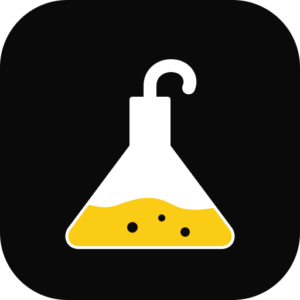
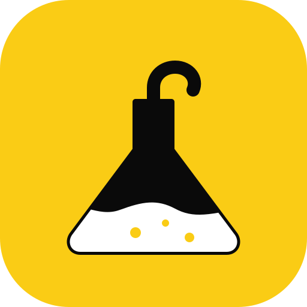
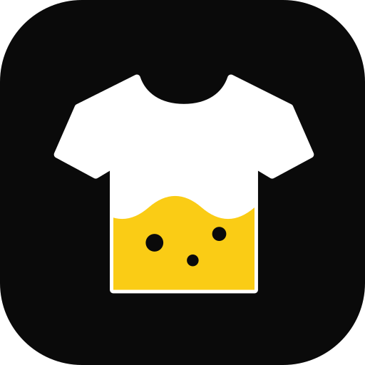
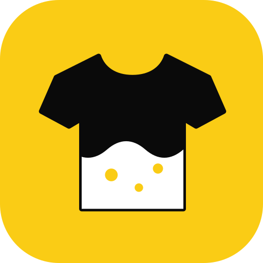
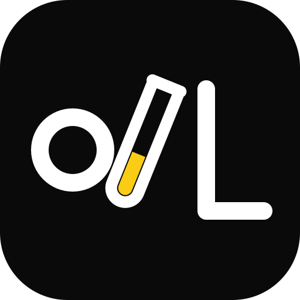
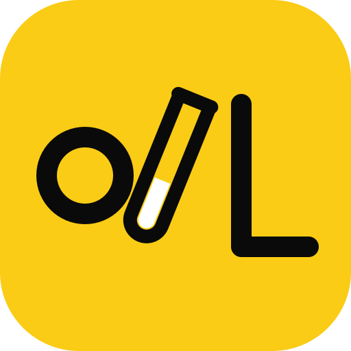

Outfit Lab — 3 propostas de logo
Ícone de app (cantos arredondados estilo iOS). Cada proposta em fundo escuro e claro, em 160, 80, 40 e 29 px. Gerado por: PROMPT-006 v1.0.
1. Cabide-Frasco
Frasco de laboratório com ombros de cabide e gancho; líquido amarelo.


2. Camiseta com bolhas
Camiseta que se enche como um béquer: nível ondulado e bolhas.


3. Monograma O/L com tubo de ensaio
O e L com a barra "/" do wordmark virando um tubo de ensaio.

